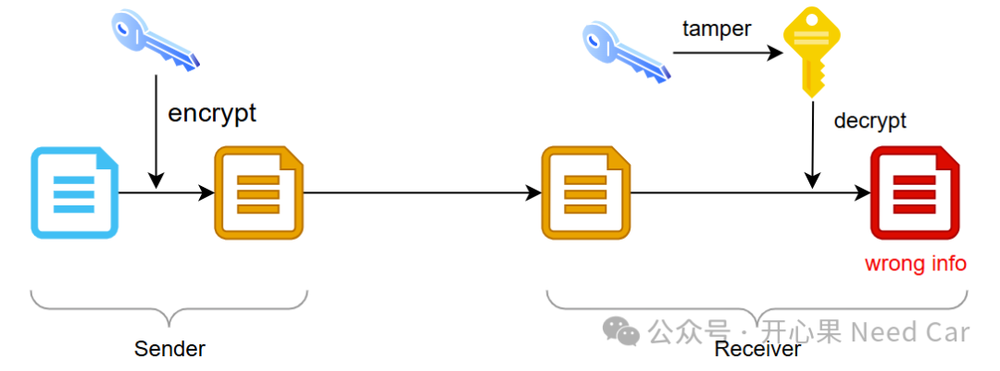
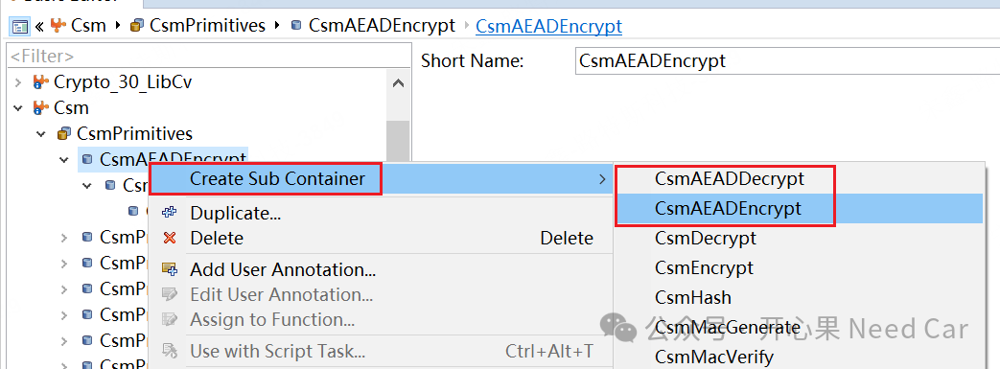
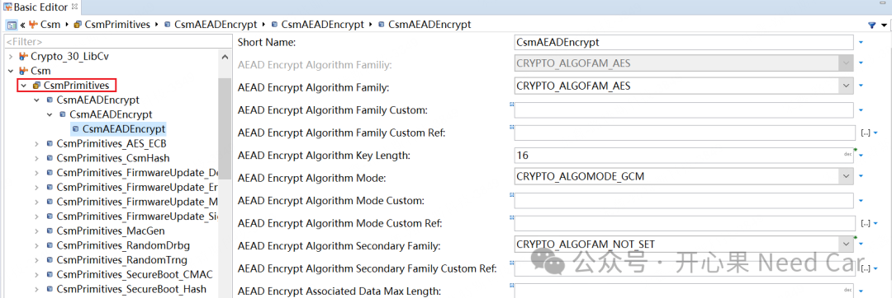
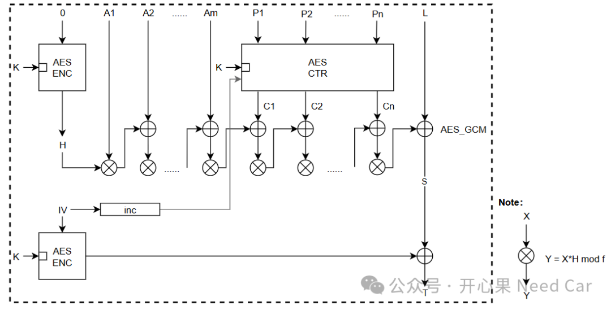
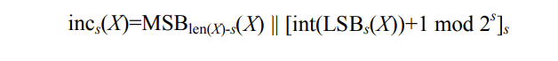
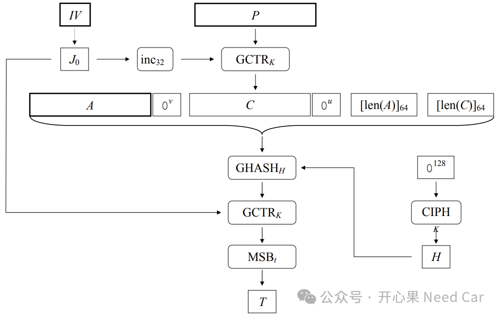
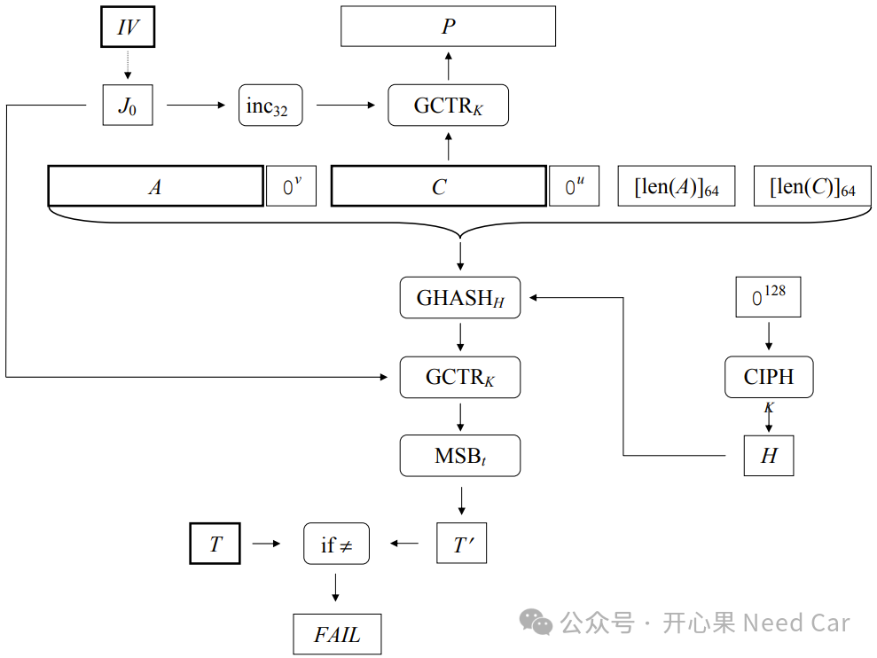
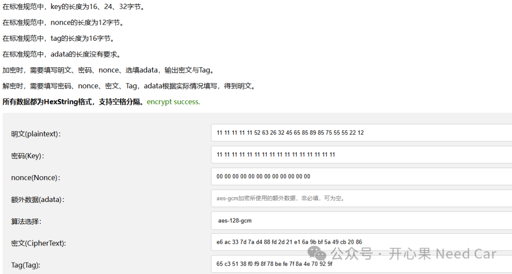

开心果 Need Car · 2024-12-16T06:36:00+08:00 · 微信原文
在密码学的范畴里，我们主要讨论对称和非对称算法。AES（Advanced Encryption Standard）对称算法是工程中常用的算法族，AES又包含多种模式：ECB (electronic code book mode)、CBC (cipher block chaining mode)、CTR (32-bit counter mod）、OFB (output feedback mode)、CFB (cipher feedback mode)等。其中，ECB和CBC较为常用，除此之外，有些车企还会选择GCM (Galois counter mode)模式，这又是为什么呢？本文，聊一聊GCM模式。
1、为什么要使用AES_GCM模式
AES_GCM是一种对称加密模式，结合了对称加密算法AES和认证机制，主要用于确保信息的机密性和完整性。首先，GCM是一种对称加密算法，确保了数据的机密性（Confidentiality），在加密/解密过程中，需要使用对称密钥。但是，如果解密方持有的对称密钥被篡改，并且解密方并不知道密钥被篡改，会导致什么后果呢？如果解密方持有的密钥被篡改，就会导致解密结果不对，但是，解密方可能认为这个解密结果是有效的，示意如下：


AEAD配置中的GCM模式配置示意如下：

GCM模式是CTR（counter mode）模式与GHASH的结合。使用初始值IV（initialization vector）的GCM模式中，AES可以加密和解密多个连续的数据块P1,..., Pn（每个数据块长度128bit），生成密文块C1,..., Cn，或者将它们解密回去。加密/解密需要密钥k和初始值IV。此外，加密操作还会计算一个认证标签T，该标签依赖于一些不会被加密的附加数据块A1,..., Am。解密不仅将密文块C1,..., Cn解密，还会检查认证标签信息T（GMAC ，Galois message authentication code mode，伽罗华消息认证码)。

提示：f = 2^32。

看到如上的表达式，是不是有点懵？解释如下：假设一个二进制（bit）字符串X，其长度是一个非负整数s，满足len(X)≥s。
LSBs(X)表示返回最右侧s个bit，举例：LSB3(111011010) = 010；
MSBs(X)表示返回最左侧s个bit，举例：MSB4(111011010) = 1110；
int(X)表示一个小于2^len(X)的非负整数，举例：int(00011010) = 26;
非负整数x，[x]s表示用s个二进制表示x，举例：39最短的二进制表示：100111，而[39]8 = 00100111，即：用8个二进制表示39；
||表示连接符，001 || 10111 = 00110111；
mod 2^s，假设s = 32，则在32位范围内进行循环递增，比如：0xFFFFFFFF，循环递增（+1）就是0x00000000。
[int(LSBs(X))+1 mod 2^s]s怎么理解呢？假设s = 32，X是一个128bit数据（eg：初始为1），X=000..001。则每次在32bit宽度内循环递增1，即X不断累加1，而且用32个bit表示。看着复杂，其实就是对AES-CTR（32-bit counter mode）初始值（IV）得累加动作，而这个累加只对最低32bit循环累加。
除了如上的加密流程表示以外，也可以参考规范(1)，AES_GCM加密模式流程图如下：

AES-GCM加密公式如下：
(C1,..., Cn,T) := AES-ENCGCM, k, IV(A1,..., Am, P1,..., Pn)
参数描述如下表：
| 描述 | |
| C1..Cn | 密文 |
| P1..Pn | 明文 |
| A1..Am | 不被加密的数据块，Option |
| k | 密钥，key的长度为16、24、32字节 |
| IV | 初始值，长度为12字节 |
| T | 认证标签，16字节 |
按照规范(1)，AES-GCM解密逻辑如下：

AES-GCM解密公式如下：
(P1,..., Pn,T’) := AES-DECGCM, k, IV (A1,..., Am, C1,..., Cn)
注意：使用GCM模式时，如果最后一个明文块（Pn）不是完整的128位，Pn必须用0进行填充，同时Cn也必须用0填充。
AES_GCM模式在线加密/解密链接：
https://const.net.cn/tool/aes/aes-gcm/
操作示例，如下所示：

提示：如上的Nonce就是IV。
4、参考资料
(1)https://nvlpubs.nist.gov/nistpubs/Legacy/SP/nistspecialpublication800-38d.pdf
(2)https://www.rfc-editor.org/rfc/rfc5116.html
往期精彩回顾